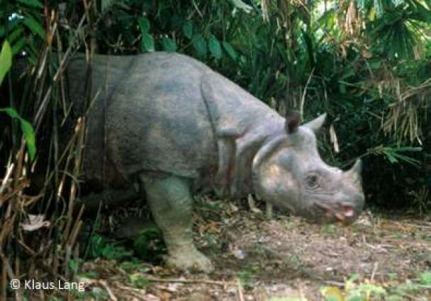

Javan Rhinoceros

The Javan rhinoceros (Rhinoceros sondaicus) is the most endangered
of the world’s five rhinoceros species, with an estimated 40-60 animals
remaining on the western tip of the Island of Java (Indonesia)
in Ujung Kulon National Park. The last member of another tiny population
in Vietnam’s Cat Tien National Park was killed by poachers in 2011.
The water- and swamp-loving Javan rhinoceros formerly ranged throughout
Southeast Asia and Indonesia, but has been hunted to near-extinction
for its horn, which is used to make Asian folk medicines.
Although it is now protected, it may not have a large-enough breeding
population to prevent the species from going extinct.